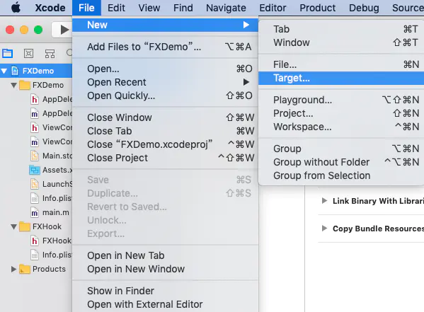
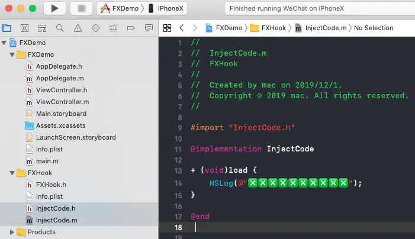
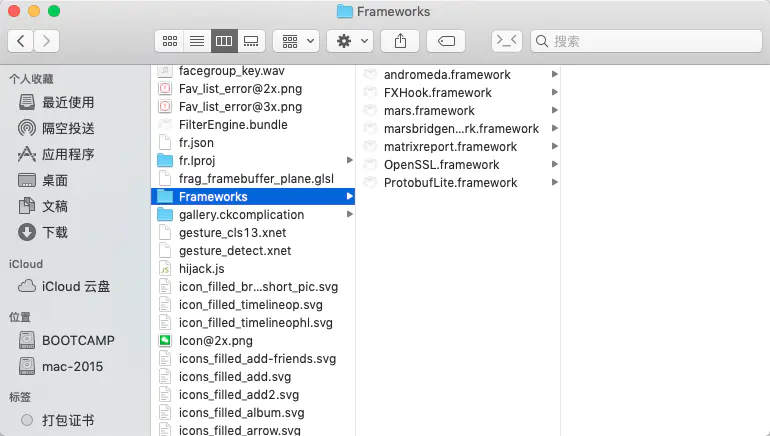
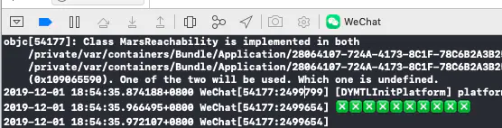
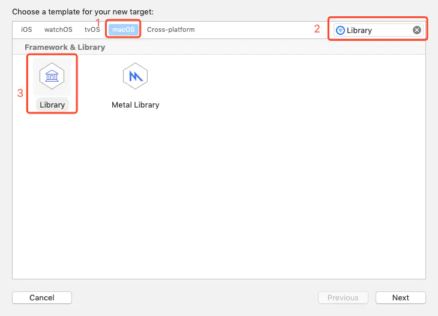
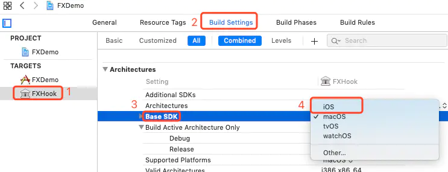
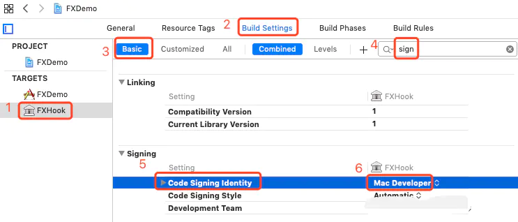
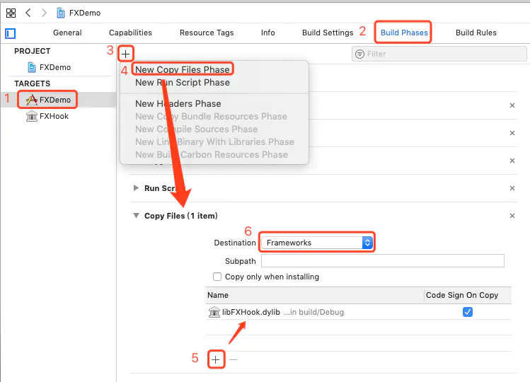
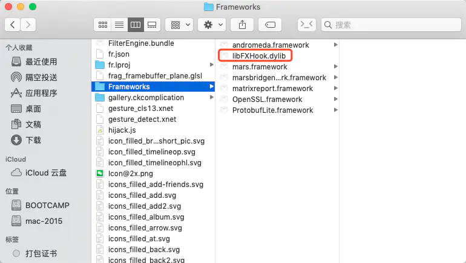

代码注入
前置条件 使用脚本重签名
一、FrameWork注入
1.1 新建FrameWork
在Xcode中File->Target新增一个Framework

1.2 FrameWork中新建一个类
1.3 添加一个load方法

目前DYLD会动态加载项目中的Frameworks，但不会加载当前FrameWork
1.4 运行编译一下
保证FrameWork放到FrameWorks目录下

1.5 yololib注入动态库
建议将yololib复制粘贴到/usr/local/bin下，可以随时随地调用
将app.sh的最后一句代码启用（注意修改FrameWork名称）
yololib "$TARGET_APP_PATH/$APP_BINARY" "Frameworks/XXXX.framework/XXXX"
1.6 运行
控制台打印 ❎❎❎❎❎❎❎❎❎❎

二、dylib注入
2.1 新建Library Target

2.2 修改dylib的BaseSDK

2.3 修改dylib的签名
修改成iPhone Developer或者通用的Apple Developer

2.4 添加依赖

2.5 运行编译
查看是否已经添加到App的Frameworks中

2.6 修改脚本，使用yololib注入动态库
yololib "$TARGET_APP_PATH/$APP_BINARY" "Frameworks/libFXHook.dylib"
如果遇到image not found，clean一下再run